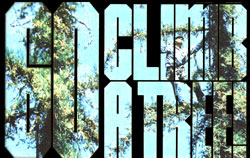

I was raised in the heart of the Saint Lawrence Valley . . . probably the most fertile farming region in all of New York State. Although I've yet to meet a visitor -even today-who has not been filled with awe by the valley's beauty . . . I can't help wishing that everyone could see it as it once was.
I'm not an old man, but 1 can still remember when the horse was a necessity on every farm and the countryside was dotted with small herds of cattle grazing contentedly behind rail fences.
Ah, but prosperity must come to all and so it came to us in the form of the great Saint Lawrence Seaway. Yes, I'm aware of the waterway's "benefits" to the rest of the country . . . but 1 still curse the man who spawned the idea of that huge monstrosity. (May its oilnow coating our river-seep into his grave . . . and his sleep be forever disturbed by the roar of the giant diesel tractors that replaced our horses.)
I can vividly recall the first major blow 1 saw prosperity deal to our valley. It was a warm summer morning and I-a clerk in a small country store-was waiting on half a dozen tobacco-chewing farmers. They were discussing the probabilities of a good crop that year and telling the same stories they'd told every Saturday morning since I could remember. I believe we were just in the middle of the Three-Legged Pig yarn when the first hard-hatted construction worker walked in and asked if I could cash his paycheck- "Sure,"says 1 (we were used to cashing the farmers' milk checks and we always had some extra money on hand). And then I turned the piece of paper over and read the amount: $357.20. An instant hush fell across the room . . . save for the choking sound made by one of the farmers who'd just swallowed his tobacco.
There were six farms for sale in our neighborhood the next morning, and the trend soon swept the valley. Those that couldn't be sold easily were just abandoned as their owners made their way to the nearest union hall. Month by month and year by year, those of us who stayed watched the hayfields around us turn into untended jungles of thorn bushes, tag alder, and birch. Our biggest export had changed from milk to manpower . . . as the valley's young men left the land and moved to the cities to seek their fortunes.
The decades rolled past, and this exodus-if anything-only accelerated. Finally, even 1 began to accept the death of the old way of life I'd loved and enjoyed. And then-just a few years ago-I happened upon a group of backto-the-landers at a local auction.
The easygoing friendliness, honesty, and sincerity of these new folks took me-in my mind-once again to the six Saturday morning farmers I'd been waiting on in that store so many years before . . . and I immediately developed an interest in these people who'd come to my valley looking for a simpler way of life. I've watched the newcomers progress. I've gloried in their successes and felt some of the sting of their failures. And, although I know that things will never again be the way they were, I'm convinced that these back-to-basics people will preserve some of the simplicity and beauty that 1 remember . . . for my lifetime, at least.
That's why-as "one of the vanishing generation"-I say to all the younger people who want to nurture, care for, and live on the land: Keep coming. You are the last hope for our disappearing family farms. And I'm sure I'm not alone in my nostalgic dreams. Others who can still recall the way life was may not yet have spoken up and welcomed you . . . but whether you ultimately succeed or fail, I know your eforts are being watched and appreciated by many.
And, since the work you are doing is so important, I implore all of you who are leaving the cities for the country on a quest for the Good Life to prepare yourselves well before you start out. Whether you eventually end up settling in my lovely valley or in some other utopia, you will need much knowledge to accomplish all that you are trying to do. There are many pitfalls along the way and often just plain hard work will not be enough to get you over all the rough spots. But you can do it . . . you must.
Kenneth Cook Brasher Falls, N.Y.
|
 STAFF PHOTO |
|
|